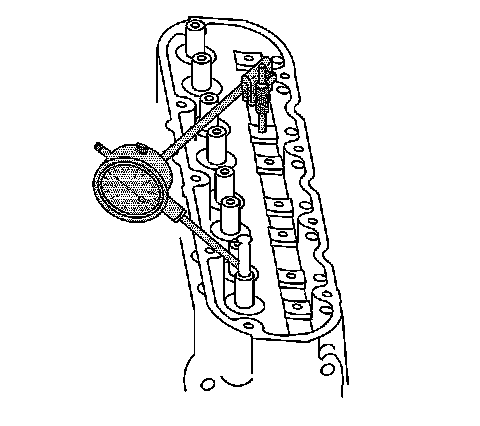
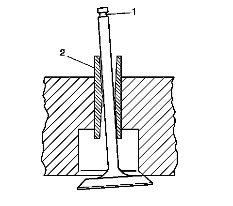
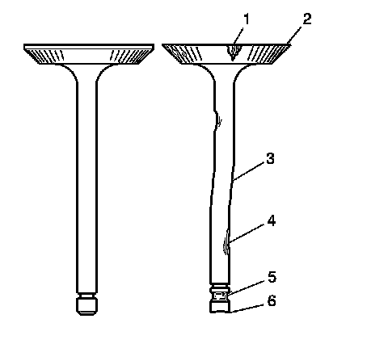
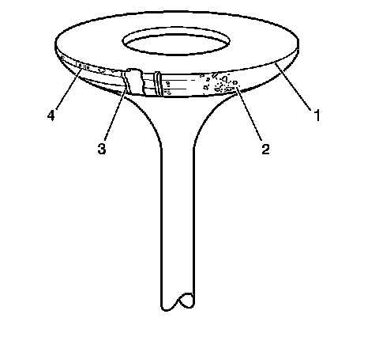
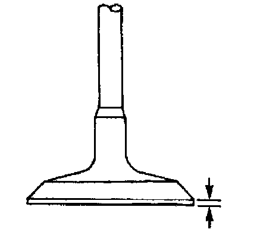

51. Valve Guide Reaming, and Valve and Seat Grinding
Valve Guide Reaming/Valve and Seat Grinding
Tools Required
J 37378-1 Valve Guide Reamer
Valve Guide Reaming

Notice: Excessive valve stem-to-guide clearance may cause a noisy valve train, premature valve stem oil seal wear, component damage, and/or excessive engine oil consumption.
Notice: Insufficient valve stem-to-guide clearance will result in noisy or sticking valves. Valves that are too tight may disturb engine smoothness or lead to component damage.
1. Using a dial indicator, measure the valve stem-to-guide clearance. Position the tip of the dial indicator at the top of the valve guide.
Valve stem-to-guide clearance may also be obtained by using a micrometer to measure the valve stem diameter and a ball type measuring gage to measure the guide bore.

2. A valve stem (1) and guide (2), with excessive clearance, must be replaced or the cylinder head replaced. Refer to Engine Mechanical.

3. Inspect the valve stems for excessive scoring, wear, or warpage.
^ A valve stem that has excessive scoring (3 or 4) or wear (4 or 6) must be replaced.
^ If a valve guide is worn or has excessive stem-to-guide clearance, the cylinder head should be replaced.
4. Measure the valve stem diameter. A valve stem with a diameter less than 7.95 mm (0.313 in) must be replaced.
If the valve stem diameter is within specifications, and the stem-to-guide clearance is excessive, the cylinder head must be replaced.
Valve and Seat Grinding
Important:
^ Reconditioning the valve seats is very important. The seating of the valves must be perfect for the engine to deliver optimum power and performance. Several different types of equipment are available for grinding valve seats.
^ Another important factor is the cooling of the valve head. Good contact between the valve and the seat will ensure that heat will be properly dissipated.
^ The recommendations of the equipment manufacturer should be followed carefully to obtain the proper results. Regardless of the type of equipment used, it is essential that valve guide bores be free of carbon or dirt to ensure proper centering of the tool pilot in the guide.
^ Valves that are pitted must be refaced to the proper angle. Valve stems that show excessive wear, or valves that are warped excessively must be replaced. When a valve head that is warped excessively is refaced, a knife edge may be ground on part or all of the valve head due to the amount of metal that must be removed. Knife edges lead to breakage, burning or pre-ignition due to heat localizing on this knife edge. If the edge of the valve head is less than 1.25 mm (0.05 in) after grinding, replace the valve.
^ Several different types of equipment are available for refacing valves. The recommendation of the equipment manufacturer should be carefully followed to obtain the proper results.
^ DO NOT reface intake valves. Intake valves with excessive wear or damage MUST be replaced.
Inspect the valve for the following conditions:
^ Burnt or eroded areas (1)
^ A worn margin (2)
^ A bent stem (3)
^ A worn or scored stem (4)
^ A worn key groove (5)
^ worn stem tip (6)

1. Inspect the valve face for the following conditions:
^ Worn or no margin (1 or 4)
^ Pitted surfaces (2)
^ Burnt or eroded areas (3)

2. Inspect the valve margin.
The exhaust valve may be refaced if the margin is greater than 1.25 mm (0.05 in) thick before grinding.
3. Reface pitted exhaust valves on a suitable valve refacing machine.
4. Replace the valve if the margin is less than 1.25 mm (0.05 in) thick after grinding.
5. If the valve face has been ground, it may be necessary to shim the valve spring in order to obtain the proper spring installed height. Refer to Cylinder Head Disassemble.
6. Inspect for a loose valve seat in the cylinder head. The valve seat has an interference fit to the cylinder head.
7. Clean the valve guide bores with a suitable tool. Remove all carbon or dirt from the bores.
The valve guide must be clean for the seat grinding tool to obtain proper results.
8. Grind the valve seat.
The recommendations of the equipment manufacturer should be followed carefully to obtain the proper results. Regardless of the type of equipment used, it is essential that valve guide bores be free from carbon or dirt to ensure proper centering of the tool pilot in the guide.
9. Inspect the valve seats.
^ The valve seats should be concentric to within 0.05 mm (0.0021 in) total indicator reading.
^ If the valve seat has been ground, it may be necessary to shim the valve spring in order to attain the proper spring installed height. Refer to Cylinder Head Disassemble.